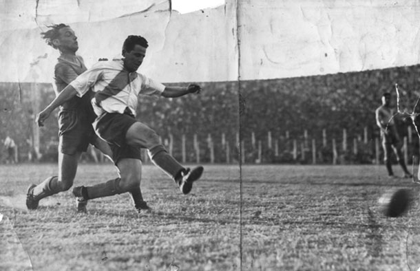

¡Un poco de una historia muy grande!
0
En 1901 se Funda el club
Tras la fusión de los clubes La Rosales y Santa Rosa, dos equipos
del barrio de La Boca se funda River Plate
1
En 1909 River derrota al poderoso Alumni de los hermanos Brown
River es subcampeón, Alumni fue nueve veces campeón entre 1901 y 1911
2

El Primer clásico River vs Boca, lo gana River
En 1913 River le gana a Boca por 2 a 1, el partido se juega en la cancha
de Racing y los goles los hacen Cándido García y Penney
3

En 1920 River sale campeón
El club le gana a Quilmes por 2 a 0, con goles de Cándido García y Galazino,
y obtiene su primer título de la era amateur
4

En el inicio del profesionalismo River compra a Carlos Peucelle
la compra se hace al club Sportivo Buenos Aires por 10000 pesos y obtiene
el apodo de "Millonarios"
5
En 1932 River sale campeón por primera vez en el profesionalismo
Vence a Independiente por 3 a 0, con goles de Ferreyra, Peucelle y Zatelli
6

En 1932 llega Bernabé Ferreyra
River le adquiere a Tigre el pase de Bernabé, que se transformará en sensación
y en el goleador del torneo con 43 tantos
7

El 25 de mayo de 1935 nace El Monumental
los dirigentes del club colocan la piedra fundamental del estado
8
Se prepara "La Maquina"
en 1935 debutan en primera división dos jóvenes promesas que harán
historia, José Manuel Moreno y Adolfo Pedernera
9
En 1936 River obtiene las copas Campeonato y de Oro
Ese año se juega un campeonato de una ronda que gana River, una semana más
tarde River le gana a San Lorenzo por 4 a 2, que había ganado la primera rueda.
10

En 1937 River sale bicampeón
Rivera supera la barrera de los 100 tantos, anotaron 106 veces, le gana a
Argentino Juniors por 6 a 0, es el último título que obtiene en el eadio de Alvear
y Tagle
11

El 26 de mayo de 1938 se inaugura el Monumental
Ante 70000 personas River le gana el amistoso a Peñarol por 3 a 1, el primer tanto
en el Monumental lo convierte Peucelle
12
En 1939 debuta "la Gloria Máxima"
El 18 de junio debuta ante Estudiantes de la Plata Amadeo Labruna, quien se convertiría
en el máximo goleador del futbol argentino con 293 tantos, al igual que Arsenio Erico. Ese año+
debuta Juan Carlos Muñoz, otro integrante de "La Máquina"
13

La primera goleada a Boca
El 19 de octubre de 1941 River derrota a Boca por 5 a 1, con tantos de Labruna, Pedernera,
Moreno y dos de Deambrosi. Hasta hoy sigue siendo la máxima goleada al eterno rival de barrio.
14
En 1941 River se corona campeón y se arma "La Máquina"
por sugerencia de Peucelle, el entrenador Renato Cesarini pone a Pedernera de centrodelantero en
en lugar de inside. La nueva delantera forma: Muñoz, Moreno, Pedernera, Labruna y Deambrosi
15

aparece Lousteau y Explota "La Máquina"
Debuta Felix Lousteau en la primera de River y queda conformada la delantera
"La Máquina", con Muñoz, Moreno, Pedernera, Labruna y Lousteau
16
Nuevo campeonato y vuelta olímpica en La Bombonera
el 8 de noviembre de 1942 River empataba 2 a 2 frente a Boca y se aseguraba el
campeonato. Los xeneizes gananban 2 a 0, pero con dos goles de Pedernera el partido
terminó empatado
17

En 1945 debutan tres leyendas de River
Provenientes de las divisiones inferiores debutan tres grandes de River: Amadeo
Carrizo, Néstor Rossi y Alfredo Di Stéfano
18
En 1945 River campeón
el 25 de noviembre River le gana en el Monumental a Chacarita por 2 a 0 y da una
nueva vuelta olímpica. Angel Labruna fue el goleador del torneo con 24 tantos.
19

En 1947 vuelve la "Saeta Rubia"
Tras competir un año en Huracán, Alfredo Di Stéfano retorna al club. Será su mejor
temporada en el futbol local, se corona goleador del torneo con 27 goles
20
En 1947 River campeón
el 9 de noviembre River le gana a Rosario Central por 4 a 0. los goles fueron marcados+
por Di Stéfano, Labruna, Lousteau y Martínez -reemplazante de Moreno-
21
El éxodo de los gigantes
Tras la huelga de 1948 se produce el éxodo de grandes jugadores al extranjero. Moreno partió
para Chile, Rossi, Di Stéfano y Luis Ferreyra para Colombia.
22
En 1952 River campeón
A los veteranos Carrizo, Yácono, Ramos, Labruna y Lousteau, se sumaron nuevos
nombres como Santiago Vernazza, Eliseo Prada y Walter Gomez.
23
En 1953 dice adiós un grande
Se despide Norberto Yácono tras jugar 15 temporadas y obtener seis títulos con la casaca
millonaria.
24
Se prepara "La Maquina"
en 1935 debutan en primera división dos jóvenes promesas que harán
historia, José Manuel Moreno y Adolfo Pedernera
25

En 1936 River obtiene las copas Campeonato y de Oro
Ese año se juega un campeonato de una ronda que gana River, una semana más
tarde River le gana a San Lorenzo por 4 a 2, que había ganado la primera rueda.
26
En 1955 River sale bicampeón en la Bombonera
Con la incorporación de Federico Vairo y el retorno de "Pipo" Rossi, River se
consagra campeón el 8 de diciembre de 1955 en la Bombonera, con goles de Labruna y el
"Mono" Zárate.
27
En 1956 River se consagra bicampeón
El 25 de noviembre River se consagra campeón en Rosario, le gana a Central por
4 a 0, con goles de Vairo, Rossi, Labruna y el "Cabezón" Sívori.
28
Sívori se va a la Juventos
En 1957 el "Cabezón" es transferido a la Vecchia Signora por 10 millones de pesos.
29
En 1957 debuta otro grande
El 15 de diciembre debuta Erminio Onega en la primera de River
30

En 1957 River se consagra tricampeón
River se consagra tricampeón en el Monumental tras derrotar 2 a 0 a Indpendiente, con
goles de Labruna y Menéndez. Zárate se consagra como mayor anotador del torneo con 22 tantos.
31

Se cierra la "Herradura"
con el dinero de la transferencia de Sívori se completan las obras para completar las obras
de la tribuna Almirante Brown Baja. La famosa "Herradura" comienza a cerrarse.
32
¡pronto volveremos!
¡hay mucha más historia!
hacete amigo, entra en https://www.cariverplate.com.ar/
33